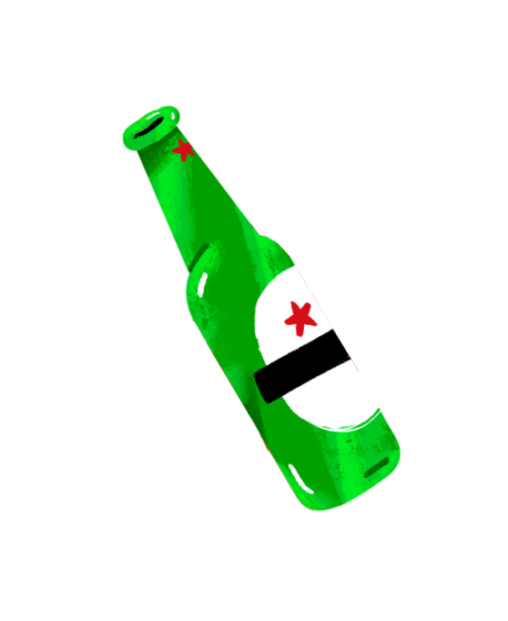
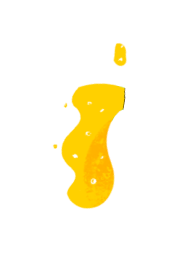
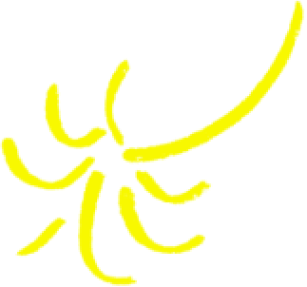
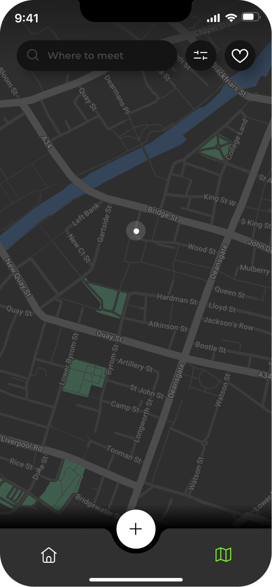
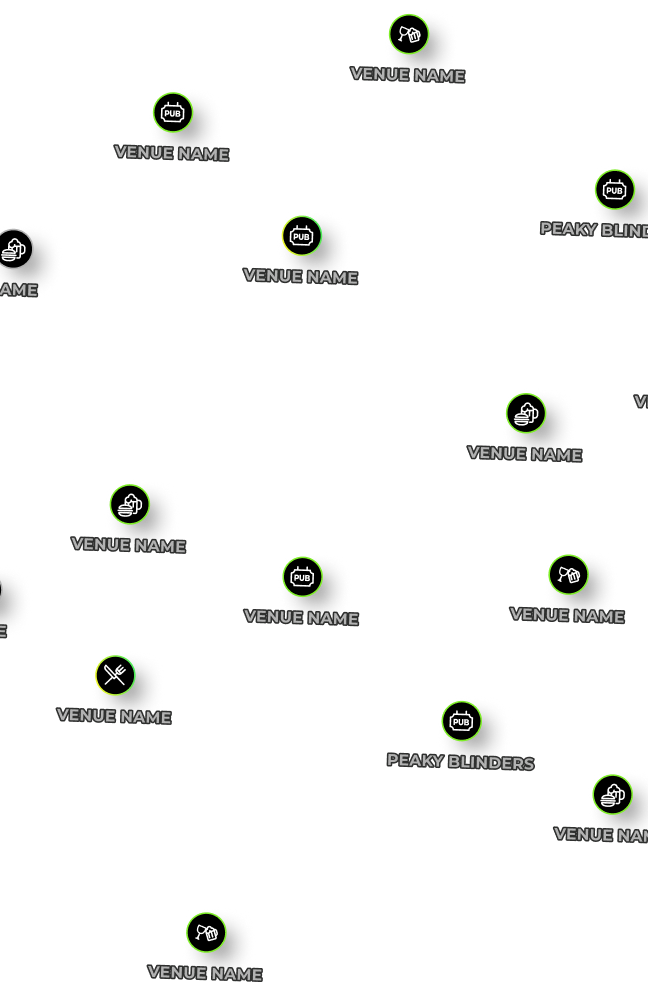
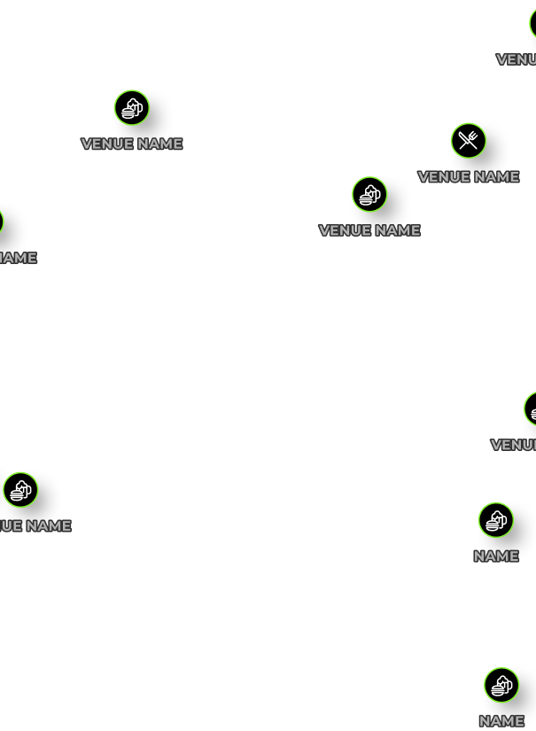
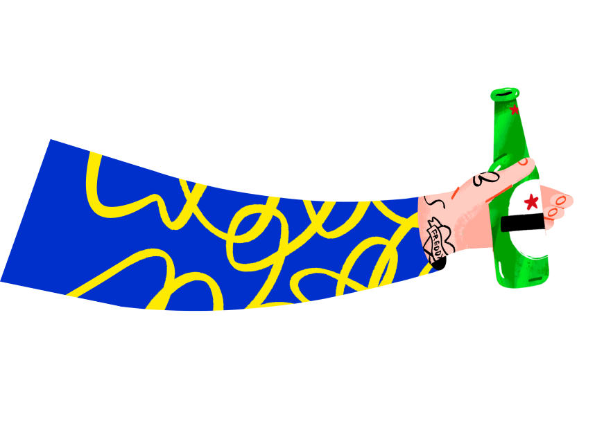
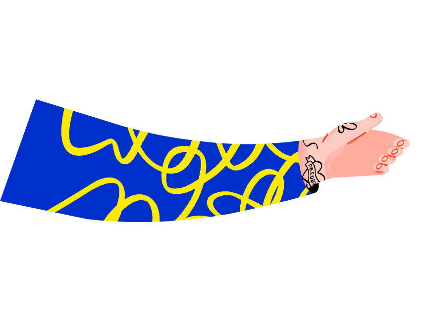
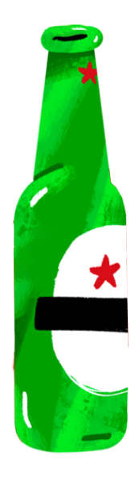
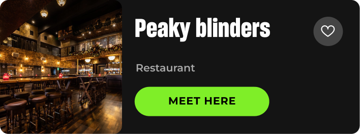

Добавляем ощущение праздника в приложение для баров — не усложняя интерфейс
Клиент — известный алкогольный бренд с приложением, в котором друзья планируют вечер в баре. Интерфейс работал хорошо, но ему не хватало эмоции. Наша цель — добавить «вау»-эффект через анимации и микровзаимодействия.
Итог: 30 идей, 10 микровзаимодействий, 5 авторских иллюстрированных анимаций — и игра «бутылочка», которая вошла в продукт.
Приложение работало. Но праздником не ощущалось
Интерфейс был чистым и функциональным — но в нём не было предвкушения вечера. Задача была не починить сломанное, а добавить эмоцию туда, где её не хватало, не усложняя и не захламляя.
Охота за вдохновением вместо анализа конкурентов
Мы пошли другим путём: вместо похожих приложений собирали всё, что вдохновляло, — от игр и видео до Pinterest и чужих продуктов. Для каждого референса описывали, что именно вызывает эмоцию и почему. Потом сгруппировали всё по категориям.
Без самоцензуры. 30 идей — от разумных до безумных.
На собранном вдохновении мы генерировали идеи без фильтра: батлы баров, бутылочка, праздничные микровзаимодействия. На этапе брейншторма чем безумнее, тем лучше. На презентации директора смеялись — хороший знак.





Peaky blinders
Restaurant






Feeling lucky today?
Spin the bottle and we will pick you a place for your night out.

Праздник — это не редизайн, а слой эмоции поверх того, что уже работаетМы не меняли архитектуру приложения — добавили слой анимации. Микровзаимодействия на ключевых действиях оживляют интерфейс. Обновлённые иллюстрации стали основой для авторских анимаций в духе бренда. А бутылочка превратила простой выбор бара в маленькое общее приключение.


Сначала эмоция, потом функциональностьКогда задача — «добавить ощущение праздника», правильный вопрос не «что добавить?», а «что должен почувствовать пользователь?». Ответ на него определяет всё остальное.
Вдохновение живёт за пределами индустрииЛучшие идеи пришли из игр и видео, а не из других приложений для баров. Анализ конкурентов полезен, но когда проектируешь эмоцию, нужно смотреть за пределы своей ниши.
Количество идей — это стратегия, а не хаос30 нефильтрованных идей — не случайность, а способ добраться до тех 3–5, которые никогда не появятся, если начать фильтровать слишком рано.